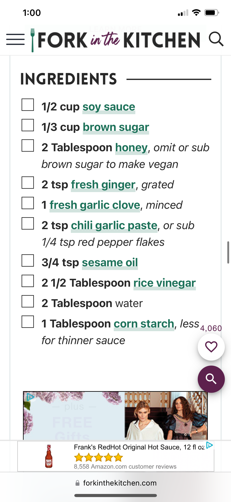

Homemade Teriyaki Sauce

Description
This sauce is great, I love to put it on my Pineapple Chicken Teriyaki Rice Bowl.
It adds such a nice flavor to each bite and really brings the dish together. Plus it's homeade,
so you can trust the ingedients are safe, no vegtable oil here!
Ingredients
- Soy Sauce
- Brown Sugar
- Honey
- Ginger
- Garlic
- Red Pepper Flakes
- Extra Vigin Olive Oil
- Rice Vinegar
- Corn Starch and Water
Steps
- Make money to buy your own food or grow and raise all your food. I'll will not dive into these steps.
- Go and purchase your food from the grocery store.
- Bring it home.
- Cook your food.
- Give thanks to God for your food.
- Then eat your food.
- Enjoy your life, you now shouldn't be hungry for a few hours.
- Sometime later you'll poop your food.
- Repeate these steps all the days of your life on this Earth in your mortal frame.
Detailed Cooking Steps
- Add all ingedients to a pot, besides the corn starch and water.
- Put it on medium-high heat, stir and wait till it starts to boil.
- While waiting for it to come to a boil combine the corn starch and water.
The ratio is always 2 tablespoons of water for every one tablespoon of corn starch.
- Once boiling turn down heat add the Corn starch water slurry.
- Stir and bring back to a boil.
- Once boiling again, you can turn off the heat and your sauce is done.
- Enjoy!
